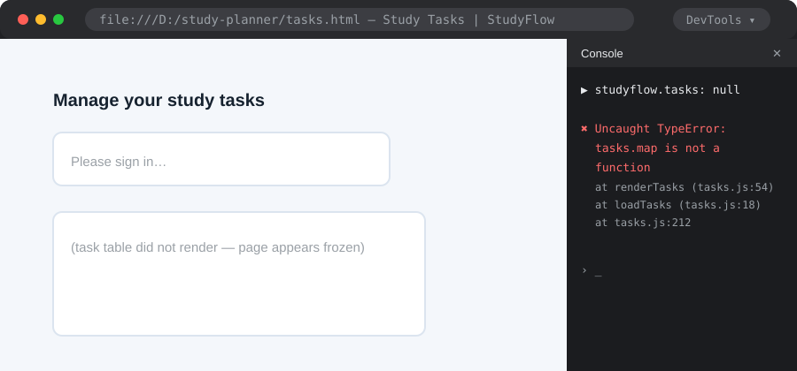
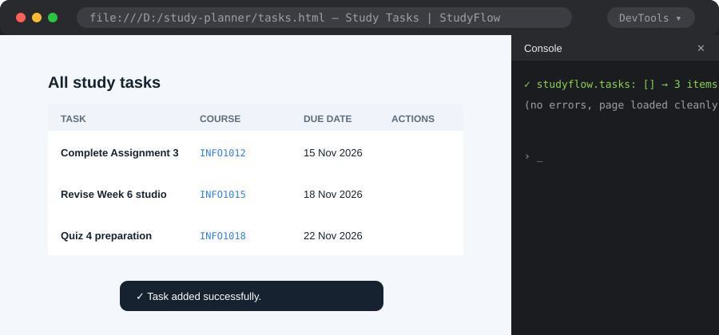
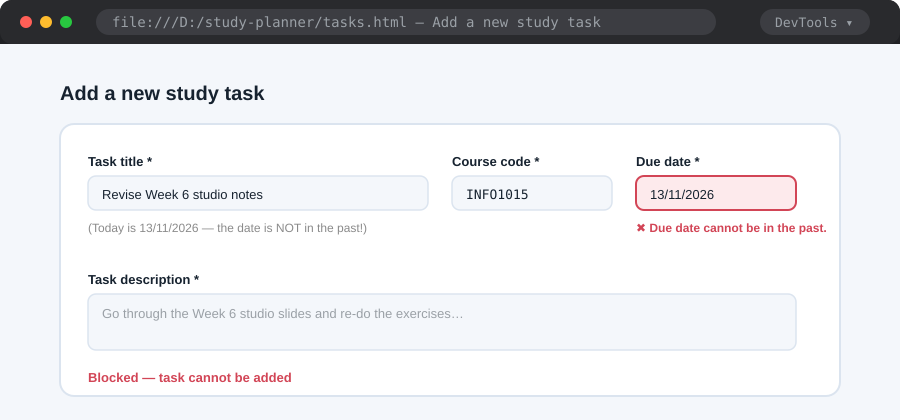
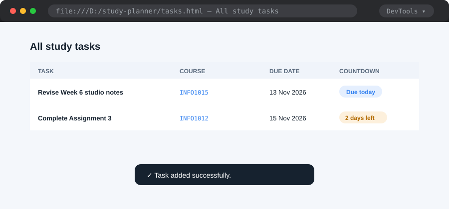

Project plan & troubleshooting blog
How StudyFlow was planned, built and debugged
A three-week sprint plan, plus two real development errors — documented with timestamps, screenshots, code and explanations.
Three-week sprint plan
The project ran across weeks 5–7 of the course (26 October – 15 November 2026), one phase per table row.
| Phase | Week 1 26 Oct – 1 Nov |
Week 2 2 – 8 Nov |
Week 3 9 – 15 Nov |
|---|---|---|---|
| Planning | Read the assignment specification and marking scheme; set up the GitHub Classroom repository, folder structure and VS Code workspace; defined the product name (StudyFlow) and scope. | Reviewed progress against the plan; refined the task data model (title, course code, course name, due date, description, notes). | Final content pass on the home page, blog and ethics reflection; prepared README, licence and the ZIP export for submission. |
| Analysis | Analyse the problem: students juggling concurrent deadlines with informal tools; listed functional requirements (login, CRUD, validation, clock) from the specification. | Chose localStorage for persistence and a single-table list view sorted by due date; sketched the login → task manager flow. |
Checked every requirement against the marking scheme and closed the gaps (image cycler button, confirmation dialog, error messages). |
| Design | Paper wireframes for all four pages; picked the typography (Sora + Inter), colour palette and card-based layout. | Built the CSS design system: tokens, header, forms, table, modal and responsive breakpoints at 720px / 960px. | Polished focus states, hover feedback, mobile layout and print styles. |
| Implementation | Hand-coded semantic HTML for all pages: home, tasks, blog, ethics; drew the three SVG study illustrations. | Implemented JavaScript: login gate, image cycler, task CRUD with a shared create/edit form, and localStorage persistence. |
Added input validation (required fields, date rules), the delete confirmation dialog, toast messages and the live clock. |
| Testing & maintenance | Smoke-tested page structure and links; validated HTML structure by eye against the semantic checklist. | Tested CRUD paths; found and fixed Error 1 (empty storage crash) and Error 2 (date comparison bug) — details below. | Full regression pass in Chrome, Edge and Firefox; keyboard-only testing; commits pushed to GitHub; ZIP exported from the repository. |
Error 1 · Task creation & viewing
The task list crashed on a first visit
The error
After clearing the browser's storage to test a "fresh" visitor, the Study Tasks page rendered nothing and the Chrome console showed an uncaught exception. No tasks could be created until the page was reloaded.

Code that caused the issue
function loadTasks() {
const tasks = JSON.parse(localStorage.getItem('studyflow.tasks'));
renderTasks(tasks);
}
function renderTasks(tasks) {
const rows = tasks.map(function (t) { // crashes when tasks is null
return '<tr><td>' + t.title + '</td></tr>';
});
document.getElementById('taskBody').innerHTML = rows.join('');
}Corrected solution
function loadTasks() {
let tasks;
try {
const parsed = JSON.parse(localStorage.getItem('studyflow.tasks'));
tasks = Array.isArray(parsed) ? parsed : [];
} catch (err) {
// Corrupted or missing data falls back to an empty list
tasks = [];
}
renderTasks(tasks);
}
What happened, and how it was resolved
Possible cause. localStorage.getItem() returns null for a key that has
never been written. JSON.parse(null) returns null (it does not throw), so
renderTasks() received null and calling .map() on it threw a
TypeError. The bug only appeared for first-time visitors or after clearing storage — which is
why it was missed during normal testing, where old data always existed.
How it was resolved. The load function now wraps parsing in try…catch and
explicitly checks Array.isArray(), so any missing, empty or corrupted value safely falls back to
an empty array []. The render function can then show the "No tasks yet" empty state instead of crashing.
Resources used. MDN Web Docs — Storage.getItem(), JSON.parse() and Array.isArray(); plus a studio discussion about always validating data read from storage.
Error 2 · Date validation
A due date of "today" was wrongly rejected as being in the past
The error
While testing validation, a task with a due date of today (a valid date — plenty of deadlines are same-day) was rejected with the message "Due date cannot be in the past", even though the date had not passed.

Code that caused the issue
function isPastDate(dateString) {
const due = new Date(dateString); // parses as midnight, e.g. 2026-11-13T00:00
const now = new Date(); // includes the current time, e.g. 19:41
return due < now; // midnight is ALWAYS before 19:41
}Corrected solution
function isPastDate(dateString) {
const due = new Date(dateString + 'T00:00:00'); // local midnight, explicit
const today = new Date();
today.setHours(0, 0, 0, 0); // compare date-to-date
return due < today; // only truly past dates
}
What happened, and how it was resolved
Possible cause. The comparison mixed two different precisions. A date string like
"2026-11-13" is parsed as midnight at the start of that day, while
new Date() is the exact current moment including hours, minutes and seconds. Midnight is always
earlier than any time later that day, so every same-day due date was treated as "in the past".
How it was resolved. Both values are now normalised to local midnight before comparing:
the input date is parsed with an explicit T00:00:00, and the current date is zeroed with
setHours(0, 0, 0, 0). The comparison is now date-to-date, so only genuinely past dates are
rejected. Edge cases re-tested: yesterday (rejected), today (accepted), tomorrow (accepted).
Resources used. MDN Web Docs — Date and Date.prototype.setHours(); the Stack Overflow thread "How to check if a date is in the past" for the midnight-parsing pitfall.